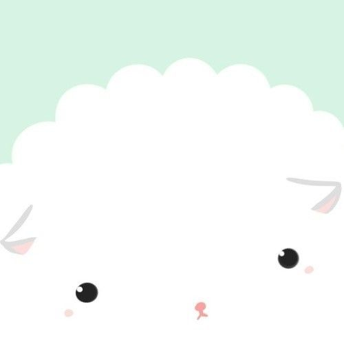
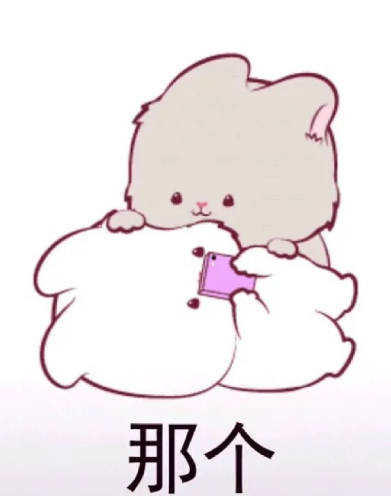

<!doctype html>
<html>
<head>
<meta charest="utf-8">
<title>190808208刘丹的博客主页</title>
</head>

<body bgcolor="pink">
</html>
<audio controls="controls">
  <source src="rsc/song.mp3" type="audio/mp3"/>
  <source src="rsc/song.ogg" type="sudio/ogg"/>
              您的浏览器不支持audio标签。
</audio>
<h1>欢迎光临我的个人网站<h1>
<a href="index.html">首页</a>
<a href="about.html">关于我</a>
<a href="diary.html">日志</a>
<a href="photo.html">相册</a>
<a href="work.html">作品</a>
<a href="contact.html">联系</a>
<h1>基本信息<h1>
<p>现读于：浙江传媒学院<br/>
院系：媒体工程学院<br/>
软件工程2班<br/>
姓名：刘丹<br/>
学号：190808208<br/>
贯籍：四川<br/>
兴趣爱好：电影，美食，听歌<br/><p>
</body>
<p><a href="#top">返回顶部</a></p>


<h1>关于我<h1>
<p>出生地：四川遂宁</br>
出生年月：2000年6月</br>
大学入学年月：2019年9月</br>
大学现读于：浙江传媒学院</br>
专业：软件工程</br>
最喜欢的课程：高数</br><p>
<p><a href="#top">返回顶部</a></p>


<h1>日志<h1>
<h2><p>累死的翠波鸟</br><h2>
　　曾经，南美洲原始森林里生存着一种鸟类，这种鸟全身翠绿，并带有一圈圈灰色纹理，就像一圈圈波浪，因此得名翠波鸟。</br>
　　这种鸟虽然美丽，但它每天忙忙碌碌都在筑巢，因而显得无精打采，很是疲惫。</br>
　　翠波鸟巢穴唯一特点是巨大，一个个架在树上，场面甚为壮观。</br>
　　但这些巨大的巢穴也不禁让人疑惑，翠波鸟是一种小鸟，体长不过五六厘米，可它们建造的巢穴为什么比自己身体大几倍，甚至是十几倍呢？</br>
　　为了解开这个谜，一名动物学者做了一个实验。</br>
　　他制作了一个巨大的笼子，并捉来一只翠波鸟观察它筑巢过程。</br>
　　可令他没想到的是，这只翠波鸟只建了一个能容下自己身体大小的巢，然后就停工了。</br>
　　这引起了学者极大兴趣，他又捉来一只翠波鸟放在笼子里，想看看它建房情况。</br>
　　可这一次情况却发生了突变，这只鸟被放进笼子里后，没过多久便开始大力建巢，而原本停止建造的那只也开始疯狂地扩建巢穴，两个巢穴越建越大。</br>
　　几天过后，两只鸟明显疲惫不堪，建造速度放慢。</br>
　　又过了几天，原先送进来的那一只竟然死了，而且这只鸟死后，另外一只立刻停止了筑巢，这些现象真让人百思不解。</br>
　　学者随即又捉来一只翠波鸟放在笼子里，还如前面发生的情况一样。</br>
　　学者陷入深思，突然明白过来，原来令翠波鸟忙碌不停原因竟是攀比。</br>
　　这种鸟攀比心理太强，容不得别人巢穴比自己大，一旦发现别的鸟新建“房子”，它便忙碌不停地扩建巢穴… 实验中两只鸟其实都是累死的。</br>
　　其实，人生也正如翠波鸟筑巢，要想真正获得快乐，活得轻松自在，就不能总拿别人为参照，许多时候自己满意就好。</br>
　　任何人，任何事，尽力就好，努力就够。</br>
　　不必让身体太过辛苦，更不必让心灵装满难过。</br>
　　总盯着别人的生活，会看不到自己的幸福。</br>
　　人不争，一身轻松；事不比，一路畅通；心不求，一生平静。</br>
　　愿你做一个知足常乐之人，让家庭安安稳稳，对朋友真真诚诚，让心情高高兴兴，对生活充满激情。</br></p>
<p><a href="#top">返回顶部</a></p>

<h1>相册<h1>
</html></br></br></br></br></br></br></br>
<p><a href="#top">返回顶部</a></p>


<h1>作品<h1>
</html>
</html></br></br></br></br></br></br></br></br></br></br></br></br>
<p><a href="#top">返回顶部</a></p>

<h1>联系<h1>
<p>电话：17366631778</br>
qq:2836227649</br>
e-mail：2836227649@qq.com</br><p>
<p><a href="#top">返回顶部</a></p>


